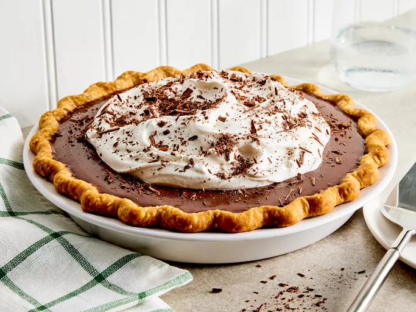

Home
Chocolate Cream Pie

Description
This rich and creamy chocolate cream pie is an old family recipe my grandmother used to make me when I was a little boy.
Ingredients
- 1-1/2 cups white sugar
- 3 egg yolks, beaten
- 1/2 cup unsweetened cocoa powder
- 3 tablespoons cornstarch
- 1/2 teaspoon salt
- 3 cups milk
- 1 tablespoon butter
- 1-1/2 teaspoons vanilla extract
- 1 (9 inch) pie crust, baked
- 1 cup frozen whipped topping, thawed
Steps
- Gather all ingredients.
- Beat sugar and egg yolks together in a large bowl until creamy.
- Mix in cocoa powder, cornstarch, and salt until well blended.
- Gently stir in milk.
- Pour mixture into a large saucepan. Cook over medium heat, stirring constantly, until boiling and thickened enough to coat the back of a metal spoon.
- Remove from heat; stir in butter and vanilla extract. Set aside to cool slightly.
- Pour mixture into prepared pastry shell; chill pie in the refrigerator until set, 2 to 4 hours.
- Garnish with whipped topping.